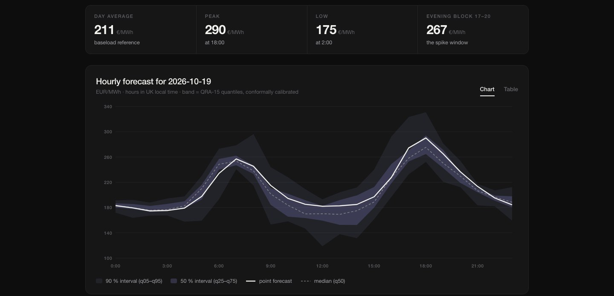
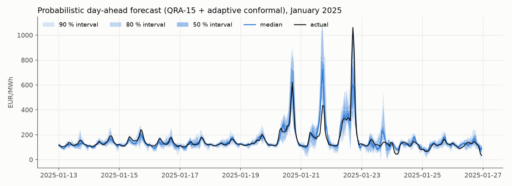

20262026
Electricity prices drift between regimes, from the 2021–22 gas crisis to the normalisation since 2024, so a model trained once slowly goes stale. Here every model keeps learning: each morning before the auction it forecasts the next day, and once the prices are known it learns from them.
Thirteen models from different families run side by side (LSTM, Transformer, TCN, DNN, gradient boosting, random forests, LEAR, a merit-order model and the Chronos foundation model). Bernstein Online Aggregation combines them per hour and updates the weights every day.
Highlights
- Out of sample from January 2024 to September 2026: MAE of 8.73 EUR/MWh, 21 % below the LEAR benchmark (11.07) and better than every single model (Diebold–Mariano p < 0.001).
- Continual learning is the largest single gain: an online random forest reaches 11.58 against 17.12 for the same model trained once.
- Probabilistic forecasts via quantile regression averaging with adaptive conformal correction; the intervals hit their nominal coverage within about one percentage point.
- Battery backtest (50 MW / 100 MWh, 85 % round trip, daily LP on the forecast, settled at actual prices): 93.1 % of the perfect-foresight revenue in 2025 and 93.7 % in 2026, against 90 % for LEAR and 75 % for using yesterday's prices.
- Runs live: every morning before gate closure a GitHub Actions job publishes the next day's forecast. The live system uses a six-member selection, which has a lower MAE than the full ensemble (8.56 vs 8.73 EUR/MWh) but captures slightly less battery revenue (93.6 % vs 93.7 % in 2026).
